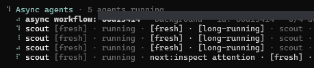

Software e integrações
Aplicações web, APIs e integrações. Python, Node.js, JavaScript/TypeScript, React, Next.js, WordPress e Supabase.
Ver a plataformaAutomação e coordenação de agentes de IA.
Capturas reais de diferentes momentos do trabalho.
Instruções por projeto, automações com Python e Node.js e testes com Playwright.
Defino escopo, fontes e critérios de aceite.
Distribuo tarefas independentes e mantenho as etapas dependentes em sequência.

Um agente supervisor reúne os resultados; eu decido sobre exceções.
Confiro arquivos e comportamento com scripts e testes.
Outro agente revisa a entrega com contexto limpo.
Aprovo o resultado e registro o necessário para continuar.
Sou de Bagé (RS), trabalho com automação e agentes de IA e curso ADS na UniCesumar.
Minha experiência reúne software, conteúdo, produção visual e gestão de negócios.
Aplicações web, APIs e integrações. Python, Node.js, JavaScript/TypeScript, React, Next.js, WordPress e Supabase.
Ver a plataformaPlanejamento e resumos, com revisão e validação dos materiais.
Explorar estudosCriação de marcas (branding), logos SVG, guias visuais e conteúdo para Instagram: posts, carrosséis e vídeos.
Copywriting para mensagens, e-mails e páginas de vendas, com revisão por agentes.
Criação no Blender, desenvolvimento em Ruby e integrações em C#.
Explorar os projetos